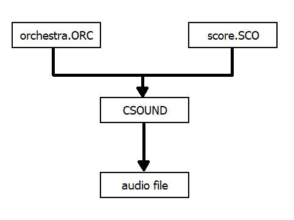
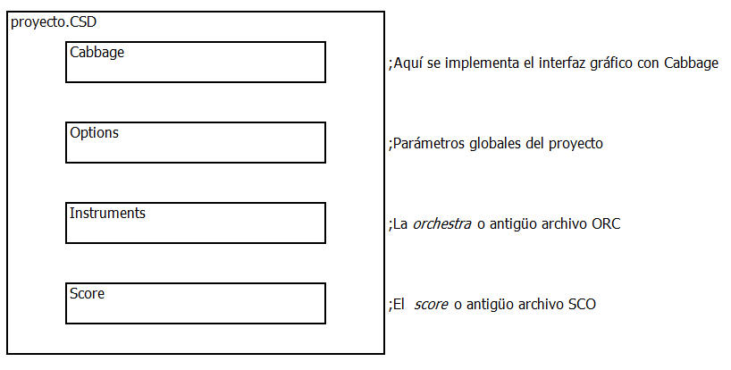
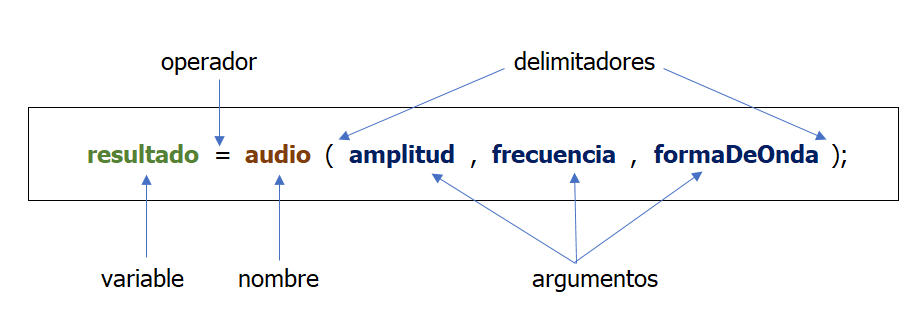
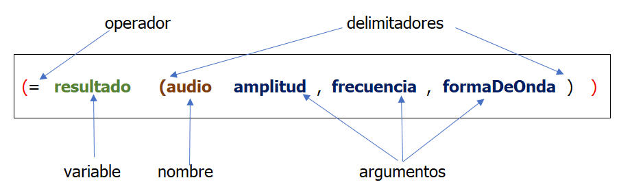
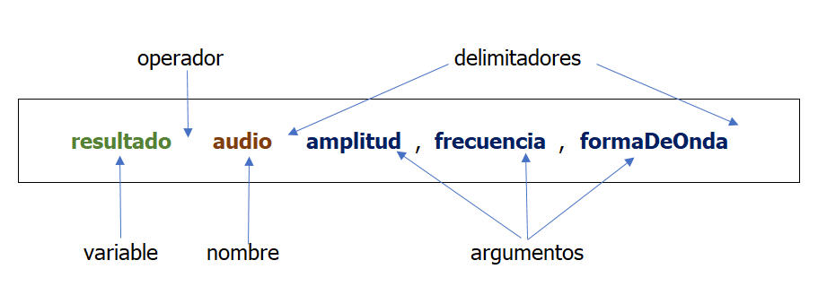

Breve historia de Csound
En la así llamada "Enciclopedia del vulgo" podrás encontrar en ese Wiki un artículo bastante aceptable de qué es Csound y la historia que hay detrás de él. Solo por cultura general es recomendable acceder a ella.
En la así llamada "Enciclopedia del vulgo" podrás encontrar en ese Wiki un artículo bastante aceptable de qué es Csound y la historia que hay detrás de él. Solo por cultura general es recomendable acceder a ella.
En sentido estricto-práctico Csound no es más que un compilador que genera una señal de audio con dos archivos de texto:

Desde hace ya bastante tiempo Csound adoptó, para la redacción de sus proyectos, un formato moderno al estilo marcadores de HTML consiguiendo, con esto, una organización de todo un proyecto en un solo documento. Este documento suele tener la extensión .CSD

Si bien es cierto podemos escribir un proyecto directamente con archivos de texto, en nuestro taller, utilizaremos un entorno de trabajo (Framework) denominado Cabbage de Rory Walsh.
Actividad:
Con el lenguaje Csound podrás generar señales de audio o procesarlas tanto en tiempo real como en diferido podrás:
Todo eso Csound lo hace para ti a través de funciones que Csound denomina opcode.
Un opcode o función suele tener en los lenguajes de programación algunos elementos básicos como:
Por ejemplo si en el lenguaje C existiese esa supuesta función, lo más probable es que lo encontremos algo así en el manual de referencia de ese lenguaje:

Existe en música otro lenguaje muy popular, sobre todo en los investigadores y compositores de la Universidad de Standford, denominado LISP. Mira cómo está la sintaxis para las funciones en ese lenguaje:

Ahora que ya hemos visto cómo se redactan algunas funciones en algunos lenguajes de programación, veamos cómo sería esa supuesta función (opcode) en Csound:

Para conocer un idioma (castellano, inglés, chino mandarín, etc.) necesitamos, tarde o temprano, conocer cómo se construyen las expresiones (sintaxis), qué palabras podemos usar (vocabulario) y cómo crear palabras nuevas.
El manual de Csound vendría a ser nuestro diccionario, ahí están todas las palabras (opcodes) que Csound utiliza.
También te da una referencia de cómo crear palabras nuevas, sobre todo para las variables. En algunos lenguajes esto se denomina declaración de variables.
Por ahora sólo mencionaremos las que necesitamos con urgencia. En Csound debemos empezar a conocer los siguientes tipos de variables:
Accede al manual de Csound y busca la sección Generadores de audio. Explora alguna de ellas y trata de identificar
Steven Yi ha implementado un sitio web para poder experimentar con el lenguaje Csound en directo. Puedes tocar tus proyecto en tiempo real desde cualquier terminal. Tiene control remoto MIDI incorporado y acepta entrada de audio para procesamiento de señal. Prueba desde tu navegador.
Sería buena idea, con tu cuenta académica, registrarte y jugar un poco.
Obra publicada con Licencia Creative Commons Reconocimiento Compartir igual 4.0